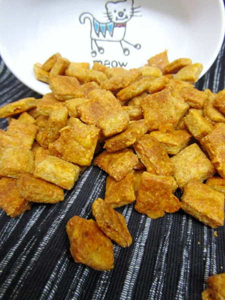

Cheesy Cat Treats

Description
Cats love cheese, even though it's not good for them in large quantities, just like people!
Ingredients
- 3/4 cup shredded cheddar cheese
- 1/3 cup grated parmesan cheese
- 1/4 cup plain yogurt
- 3/4 cup flour
- 1/4 cup cornmeal
- 1/4 cup water
Steps
- Preheat the oven to 350 degrees Fahrenheit.
- Combine the cheeses and the yogurt, then add the flour and cornmeal.
- Add enough water to create a workable dough.
- Form the dough into a ball, then roll out to a square or rectangle 1/4 inch thick.
- Cut into one inch sizes pieces and place on a greased cookie sheet.
- Bake approximately 25 minutes.